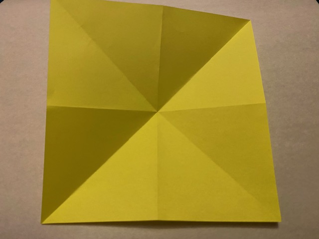

Instructions
Get what you need
- You only need one square piece of origami paper to make this origami butterfly.
Step 2: Fold in half in all direction
- Fold paper in half in both ways, then turn it over.
- It should look like this:
- Next, flip it over
- Next, Fold diagonally in both ways (X cross creases) tocreate a crease in the middle.
- Then, flip it iver again

Step 2:Folding the Wings
- Collaspe the top right and left side of the paper inwards to create the waterbomb basefrom the provide picture.
- It should be a triangle shape.
- Next, take the left and right top corner flaps and fold them up nd align them little bit away from the toppoint of the triangle.
- Like this:
Step 3: Creating butterfly shape
- Rotate 180 degrees to where the wing are pointing downwards.Then flip it over.
- Fold the bottom point up, just enough that a small portion goes over the edge:
- lIke a small triangle stinkng out.
Important!
- Make sure to not flatten the edges of the Fold
- It should be like This
- Flip it over, and trying holding the upper part of the butterfly to fold in the small triangle and fold it inwards
- Now, hold the butterfly where the small triangle is folded and genly fold the paper on the center line (small triangle).
- Press on the center fold to make it crisp
- Now gently open it back up and you should see the butterfly shape
Congratulations!
- You made a Origami Butterfly